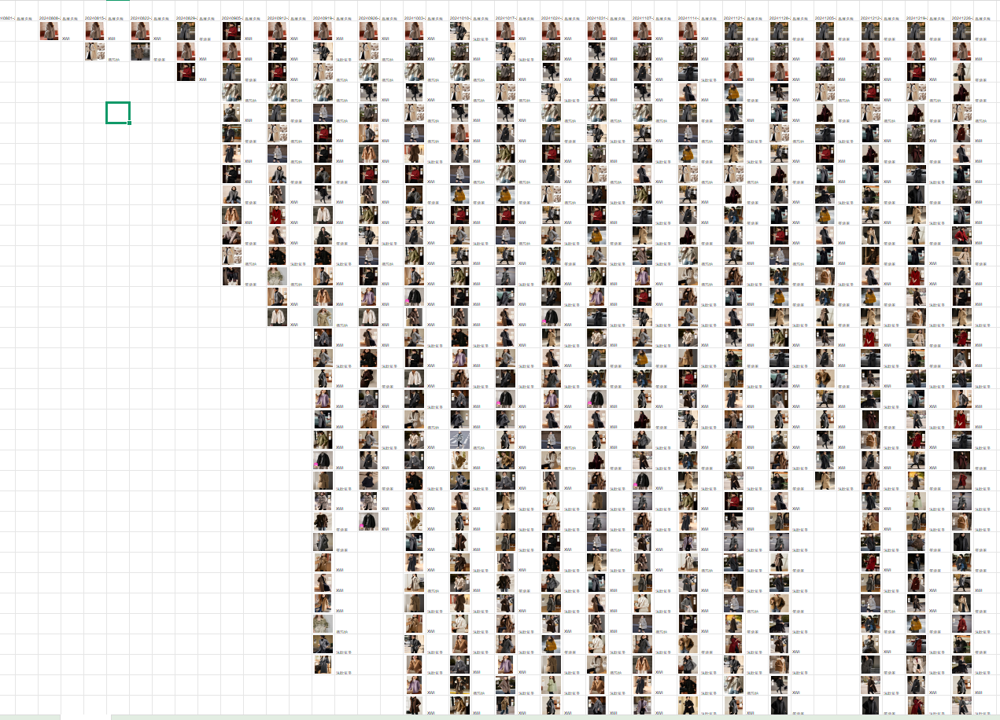

数据分析
以时间维度观察竞品主图色系变化，通过 AI 提取并分析商品图信息，把非结构化图片转化为可比较的数据。预测方向可继续结合点击、转化、生命周期和气温等因素验证。
04 / AI 数据分析与自动化
从商品图数据提取、竞品色系观察到 AI 预测探索，再到 RPA 与 Excel Macro 执行，验证数据分析和重复操作如何被重构。
以时间维度观察竞品主图色系变化，通过 AI 提取并分析商品图信息，把非结构化图片转化为可比较的数据。预测方向可继续结合点击、转化、生命周期和气温等因素验证。
用影刀 RPA 承接固定、重复的操作，并利用 Excel Macro 批量处理数据。先选择规则明确、结果容易检查的步骤自动化，再逐步扩大覆盖范围。

商品图数据矩阵支持按时间观察竞品主图色系，为选品、商品视觉和趋势判断补充结构化信号，减少只靠人工浏览图片的经验判断。
AI 销量与走势预测尚未作为正式生产模型对外发布。当前重点是验证数据来源、观察维度和自动化步骤是否为后续模型提供稳定输入，不替代运营人员判断。